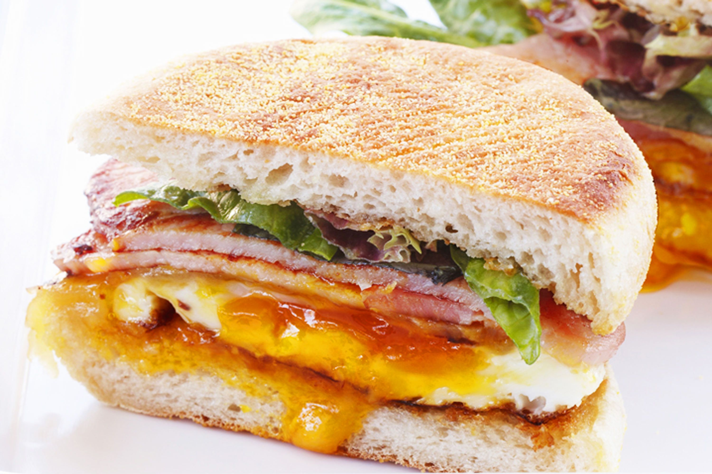

Bacon and Egg Muffin

- Bacon
- Butter
- Lettuce Leaves
- Olive Oil
- Eggs
- Cheese Slices
- BBQ Sauce
- English Muffins
- Lather pan with oil. Cook bacon on medium heat for a few minutes until brown.
- Remove bacon when done and cook 4 eggs in same pan. Add little butter inside the pan to grease it.
- Once eggs are finished to desired quality, top with slice of cheese and bacon.
- Reduce heat to low and wait for cheese to melt.
- Split and lightly toast muffins. Top base of each with an egg stack, drizzle of sauce and lettuce.
- Enjoy the muffins.